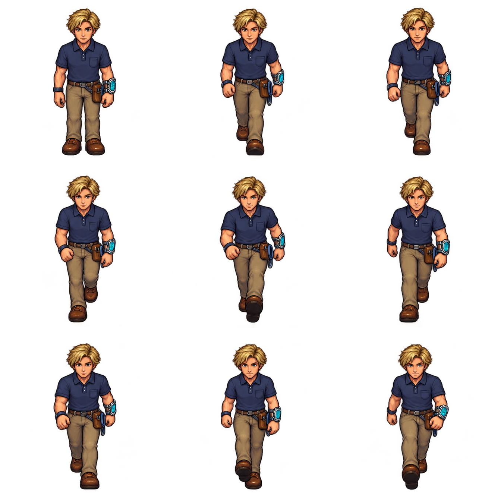
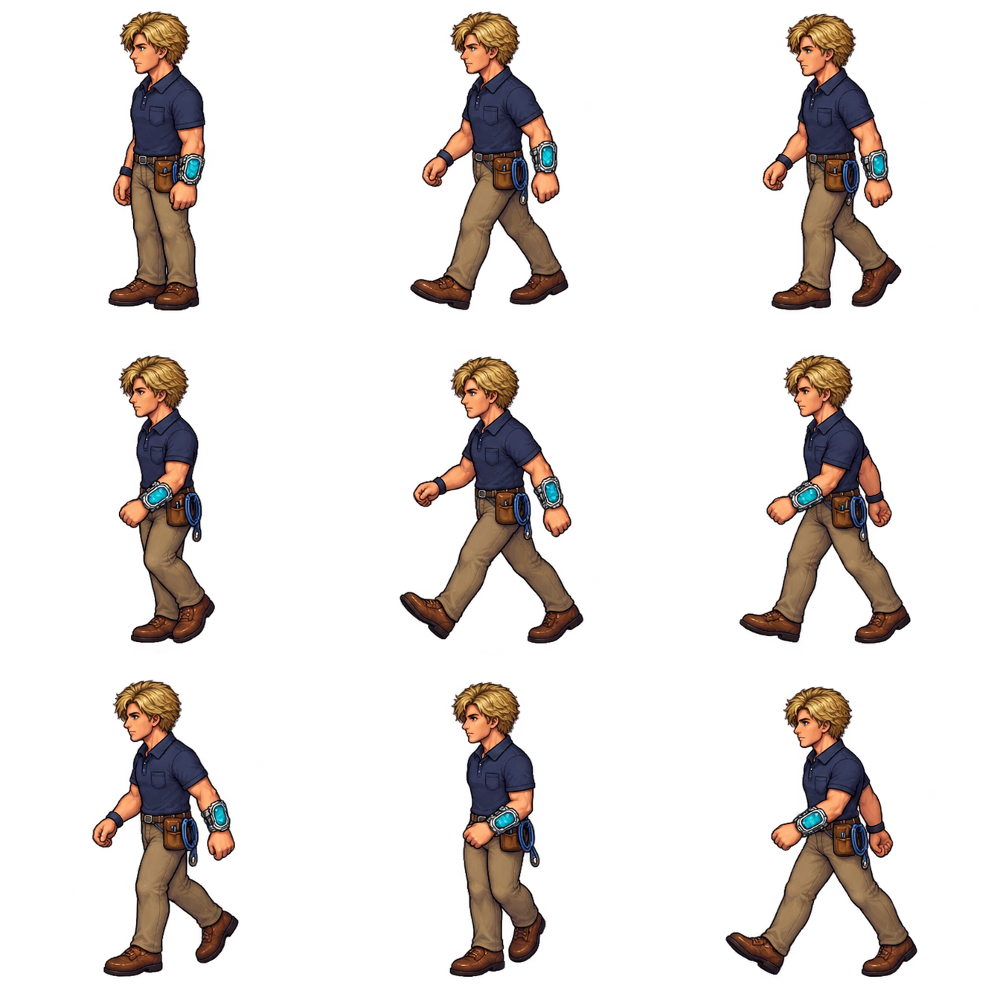
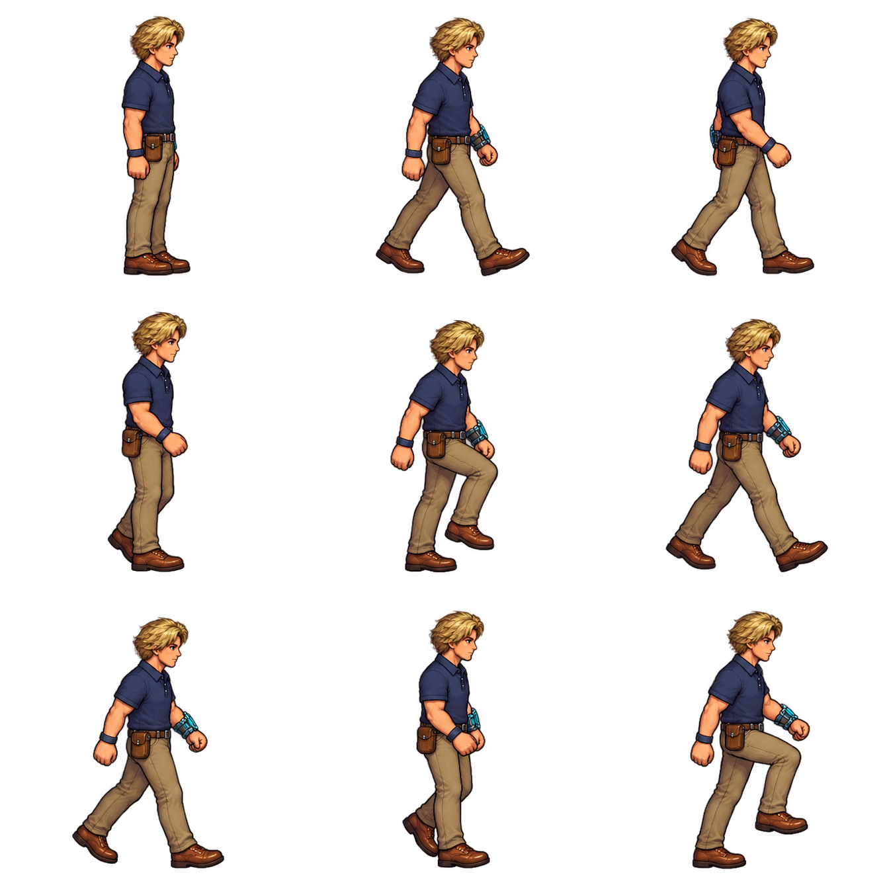
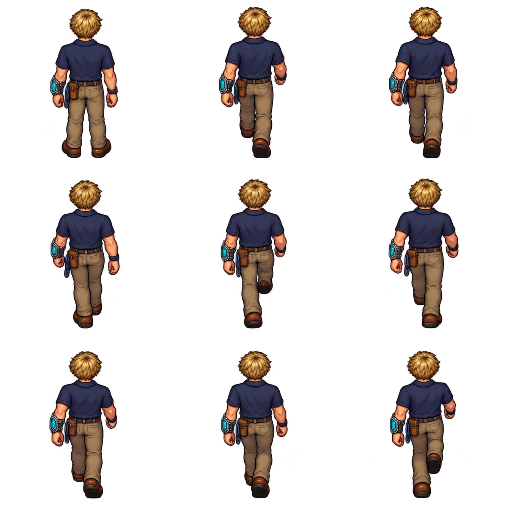

← Return to gameAdventurer · Animation review
The Aetherlink stays on the character’s left forearm. It appears on your right from the front and on your left from behind. The right-side view shows the far arm through its natural overlaps.
Review every frame



